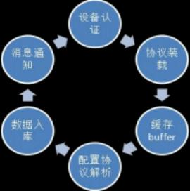
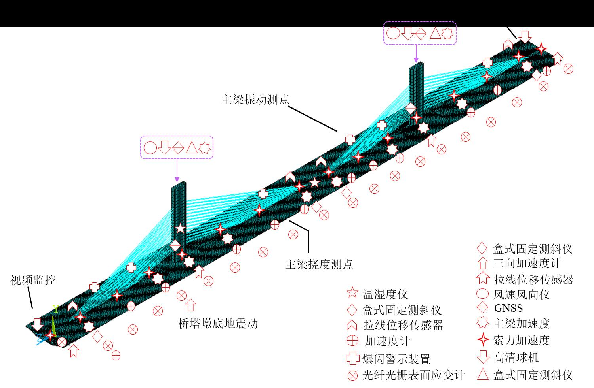

桥梁健康智能监测数据大屏
实时趋势
实时趋势
斜拉索索力对比
设备运行概况
桥梁与工程对象管理
已成功应用于国内多座特大型斜拉桥、转体斜拉桥、超高层地标及跨渠连跨桥群，经过工程实测全面检验。
实时监测
对当前监测对象的各类监测项进行连续在线采集，实时呈现最新测量值与设备通信状态。
| 监测项 | 当前值 | 单位 | 状态 |
|---|
系统设置
人员、权限与系统配置
登录人员
管理系统账号及访问角色
| 登录账号 | 角色 | 操作 |
|---|
AI 服务配置
当前问答使用本地知识库，配置保存后仍需接入对应模型服务。
系统信息
桥梁健康智能监测与全寿命健康运维系统
- 系统版本
- 读取中
- 数据服务
- 检测中
数据查询
监测数据 演示数据
| 采样时间 | 监测值 | 单位 | 状态 |
|---|
数据服务与采集链路
按信号类型灵活适配采集链路，支持多种采集制式与标准化接口，保障数据高质量回传与开放互联。
人工干预采集
人工触发单次或连续采集，适用于巡检复核与专项测量。
环境触发采集
达到预设条件自动加密采集，捕捉突发与异常事件。
定制模式采集
按计划周期轮询采集，用于常规巡测，兼顾事件加密采集。
采集模块随传感器规模弹性扩展，传感器采用 RS485 等标准通信接口，开放兼容、易于异构系统集成；断网离线存储不少于 180 天，恢复后自动续传。
1. 遵循标准： 严格遵照交通运输部 JT/T 1037-2022 标准化数据字典与接口协议；
2. 桥群互联： 单桥系统可无缝融入路段级、集团级乃至省级桥群监测监管大平台；
3. 第三方对接： 可接入桥梁防撞等第三方预警子系统，实现异构、异地、异主系统间数据便捷交互。
| 工单编号 | 监测工程 | 报警测点 | 预警等级 | 触发瞬态值 | 发生时间 | 流转阶段 | 责任人 | 操作处置 |
|---|
基于长期累积监测大数据与结构基准模态反演，当前结构变形稳定性、斜拉索索力均匀度及动力特性均在规范容许区间，未出现渐进性累积损伤。
“力学机理 + 数据驱动”核心科研壁垒
沉淀于自主可控科研成果，在国际顶级力学与结构健康监测期刊发表系列 SCI 论文，形成坚固技术壁垒。
基于递归本征正交分解与强跟踪扩展卡尔曼滤波，实现结构刚度连续损伤的在线时程识别，适用于渐进性损伤的跟踪预警。
已拓展至空心板桥铰缝损伤（黄花沟桥）、温度影响下的铰缝损伤（PCA 重构功率谱灵敏度）、附加质量法，以及风荷载激励下钢框架性能监测（京畿之门结构长期监测）等多类场景。
项目管理
统一管理在监重大工程对象，跟踪结构类型、运行状态与健康指数。
| 工程名称 | 结构类型 | 所在地 / 规模 | 运行状态 | 健康指数 | 操作 |
|---|
规范互联与网络安全保障体系
网络安全等级保护二级认证，提供 IPSec / SSL VPN 专线与多层纵深安全防护。

标准化接口与集约化桥群纳管
1. 遵循标准： 严格遵照交通运输部 JT/T 1037-2022 标准化数据字典与接口协议；
2. 纵深防御： 网络安全等级保护二级，基于 IPSec / SSL VPN 专线，HTTPS 传输加密与动态密钥身份认证；
3. 权限与审计： 基于角色的分级权限管理，操作日志全程留痕、可审计；
4. 基础设施防护： 物理机房 + 防火墙 + 防病毒多层防护体系。
视频监控与 AI 视觉识别
内嵌国产端侧 AI 算力芯片，对裂缝、锈蚀、异常事件与车牌进行实时智能识别，并与预警系统及现场警示设备联动。
2. 异常事件识别： 车辆超限、违章停靠、异常拥堵实时抓拍；
3. 三维点云重构： 结合激光扫描实现病害几何特征三维实体化还原；
4. 报警联动： 视频智能识别与现场爆闪灯 / 情报板联动警示。
监测内容：环境—作用—响应全覆盖
依据 JT/T 1037-2022，监测内容覆盖环境、作用与结构响应三大类，典型配置如下。
| 监测类别 | 监测项 | 典型设备 |
|---|---|---|
| 环境与作用 | 温湿度、风速风向、地震动、车辆荷载 | 气象站、三向加速度计、称重设备 |
| 结构变形 | 挠度 / 沉降、桥塔 / 梁体位移、支座位移、倾斜 | 静力水准仪、GNSS、拉线位移计、倾角仪 |
| 结构受力与振动 | 应变、索力、主梁与拉索振动 | 光纤光栅应变计、加速度计、磁通量传感器 |
| 表观与视频 | 裂缝、锈蚀、异常事件、车牌 | AI 高清视频监控 |

全要素工业级传感器矩阵库
覆盖“环境—作用—响应”全部监测要素，统一选型标准，兼顾长期服役稳定性与高测量精度（点击卡片查看详细技术路线）。